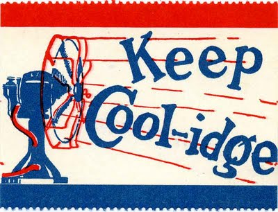

Over the years, candidates for the highest office in the land have tried to reach voters with campaign posters that are eye-catching, personal and convincing. Here are five strategies to that end that and the results, for better or for worse.
1. Summoning the Ghosts of Past Presidents
A common tactic was to pretend dead presidents endorsed your campaign.
Vote for me. Washington would want that.Johnson conjures up recently-deceased presidents FDR and JFK.Heck, let's throw everyone in there, thought Hayes.
2. Puns
Two of these candidates actually won.
I see what you did there.Cover of sheet music, not a poster, for one of the country's most unpopular presidents.We didn't.
3. Explanatory Cartoons
Harrison is manning the keg but President Van Buren is draining it while a creepy man comments.Photo of Nixon surrounded by a cartoon strip featuring (l-r) a university student, office workers, women, black people, politicians, more politicians, sports heros and teachers.
4. Short and Sweet
Got it.Even easier.
5. Dressing Up as Characters More Popular Than They Are
Daaaaad! You're embarrassing me!Not fearing separation of church and state, like at all.